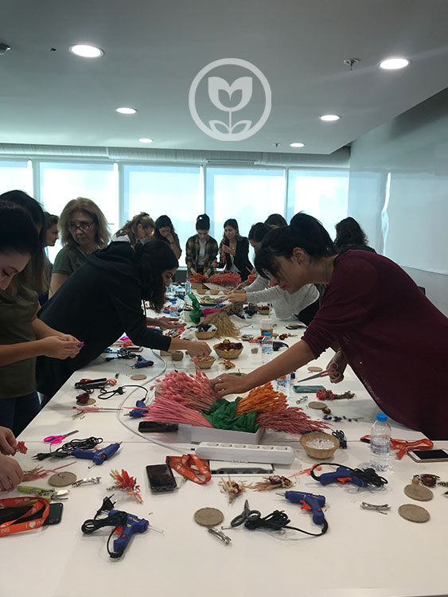
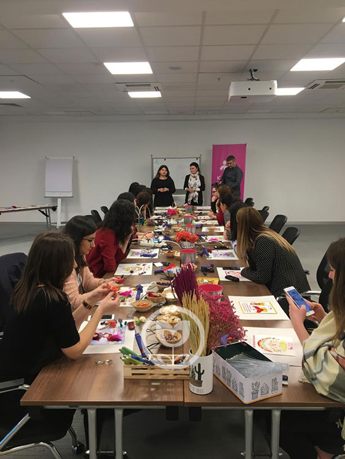

Kurumsal Çözümler3 program hattı
Ekipler için doğadan gelişim.
Kurum kültürü ve çalışan yetkinlik gelişimi kapsamında, konu dahilinde konsept geliştirerek koçluk yaklaşımıyla doğa temalı atölyeler planlıyoruz.


Atölye
Doğadan Gelişim Atölyeleri
Kurum kültürü ve çalışan yetkinlik gelişimi kapsamında, koçluk yaklaşımıyla doğa temalı atölyeler.
Kurum kültürü ve çalışan yetkinlik gelişimi kapsamında konu dahilinde konsept geliştirerek koçluk yaklaşımıyla doğa temalı olarak planladığımız atölyeler gerçekleştiriyoruz.
Atölye katılımcılarının günlük rutin hayatında sıkça rastlamadığı doğal ürünler, çiçekler, bitkilerle zihne yeni kayıtlar atıyor, böylelikle yaratıcı düşünebilmenin kapısını aralamış oluyoruz.
Zihin pratiği fırsatı sunuyor, üretmenin keyfini yaşatıyoruz.
Yıllardır birçok farklı alanda çalışmaya konu olmuş ve etkinliği ispatlanmış aktif öğrenme metodunu kullanıyoruz. Kurum kültürü ya da çalışan yetkinlik gelişimi çerçevesinde pekiştirilmesi ya da davranışa dönmesi amaçlanan konuyu, aktif öğrenme metodu ile derinleştiriyoruz.
Aktif öğrenme yöntemleri arasında olan atölyeler; katılımcıların hem bilişsel hem fiziksel becerilerini eş zamanlı çalıştırarak yaratıcı düşünme, iş birliği geliştirme, problem çözme ve kişilerarası becerilerin gelişimi gibi önemli noktalarda fark yaratabilmektedir.
Atölyeleri yüz yüze ya da Tüm Türkiye geneli online olarak planlayabiliyoruz. Atölyelerin türlerine göre hazırlanan içerikleri kitlerle katılımcıların adreslerine ulaştırıyor, katılımcıya online destek vererek gerçekleştiriyoruz.

AtölyeKurumsal
Yüz yüze ya da Türkiye geneli online.
Katılımcı & kurum faydası
Doğadan Gelişim Atölyelerinin kuruma ve katılımcıya faydalarını şöyle sıralayabiliriz:
Eğitim
Doğa Temelli Eğitimlerimiz
Doğayla etkileşimde anlam bulmak.
Doğayı kendi amaçlarımız için kullanacağımız bir kaynak olarak görme yanılgısı, bizi hem gezegenden hem de kendi doğamızdan uzaklaştırdı.
Oysa varoluşumuz, kendimizle, başka insanlarla ve tüm canlılarla kurduğumuz etkileşimlerin bir mozaiğidir.
Biz iş hayatını hayatta kalma mücadelesi verilen bir arena olarak değil, her bir parçanın birbiriyle görünmez ağlarla beslendiği canlı bir ekosistem olarak yeniden hayal ediyoruz.
Çünkü biliyoruz ki, doğanın milyarlarca yıllık bilgeliği, günümüzün en karmaşık zorluklarına bile en sürdürülebilir cevapları sunuyor.
Tanıtım
Dokümanlar
Doğadan Gelişim Atölyeleri ile ilgili daha fazla bilgi içeren PDF sunuma aşağıdaki linkten ulaşabilirsiniz.
Kök Salmak
Ait Olduğun Ekosistemi Anlamak
Bu, varlığımızın temelidir. Tıpkı bir ağacın toprağa, bir canlının habitatına ait olması gibi, insanın da anlam bulması için bir "yere" ait hissetmesi gerekir. Bu ilke, bizi çevreleyen her şeyle derin bir bağ kurmaya davet eder. Bu, "ben" bilincinden "biz" bilincine, etrafımızdaki canlı ve cansız her şeyin birbirine bağlı olduğu gerçeğini idrak etmeye geçiştir. Ayrı ve üstün değiliz; varlığımız, içinde bulunduğumuz ekosistemin sağlığıyla doğrudan ilişkilidir. Gerçek dönüşüm, ancak ait olduğun zemini anladığında başlar.
Sorumluluk Almak
Yatağını Bulan Nehir Olmak
Ekosistemin bir parçası olmak, pasif bir kabulleniş değildir; aksine, aktif bir sorumluluk gerektirir. Tıpkı bir nehrin kendi yatağını bularak denize doğru kararlılıkla akması gibi, her birey de kendi özünü tanımalı ve potansiyelini bu ekosistem içinde en doğru şekilde akıtmalıdır. Bu, gezegen üzerindeki etkimizin farkında olmak, proaktif davranmak ve kendine yetebilme gücünü keşfetmektir. Sorumluluk, sadece görevleri yerine getirmek değil, ekosistemdeki etkinin bilinciyle hareket etmektir.
Birlikte Yeşermek
Simbiyotik Ağlar Kurmak
Kök saldığımız bu ekosistemde yalnız değiliz. Bir orman, tekil ağaçların toplamı değil, kökler aracılığıyla birbiriyle konuşan, kaynakları paylaşan ve birbirini destekleyen devasa bir organizmadır. Bu ilke, rekabet yerine simbiyozu, hiyerarşi yerine ise güven ağlarını koyar. Sosyal bağlar ve iş birliği, ekosistemin refahını sağlayan ve bizi besleyen görünmez köklerdir.
Danışmanlık
Sosyal Sorumluluk & İş Danışmanlığı
Kurum kültürüne göre sosyal sorumluluk proje tasarımı, süreç danışmanlığı ve raporlama.

DanışmanlıkDanışmanlık
Kurum özelinde ülke istatistiklerine dayanan ihtiyaçlar paralelinde; kurum kültürüne göre sosyal sorumluluk proje tasarımı, proje süreç danışmanlığı, proje raporlama, gönüllülük seminerleri, çalışan motivasyonu etkinlik hizmetleri veriyoruz.